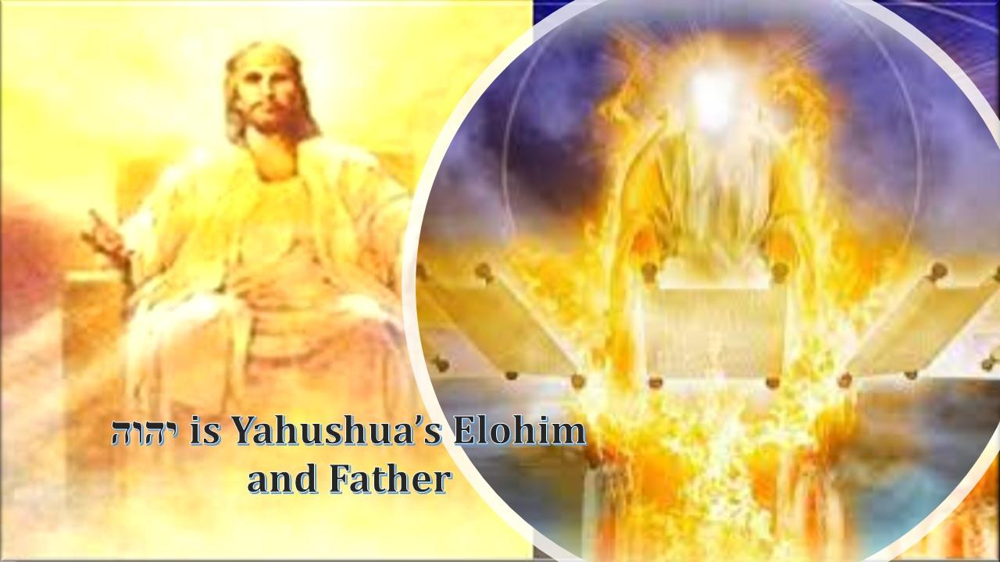

Contents

The relationship between יהוה and Yahushua is not difficult to understand. It is that of Father and Son. The same relationship we have with our Father in Heaven. יהוה is not only the Father of Yahushua but He is the Father of all His sons in the same way. In the physical shadow of earthly father and son; and the spiritual parallel that shadow represents… the father and son are not the same “being”. One begets the other. One is an “image” of the other. יהוה has always revealed Himself as our Father as Yahushua too confirmed. We see that יהוה is Yahushua’s Elohim and Father as Yahushua is no different that you and I:
Luqas 112He said to them, “When you pray, say: “‘Father, hallowed be your name, your kingdom come.”
Kepha Aleph/1 Peter 1
To יהוה’s elect, exiles (lost sheep of The House of Yisra’el) scattered throughout the provinces of Pontus, Galatia, Cappadocia, Asia and Bithynia, 2 who have been chosen according to the foreknowledge of יהוה the Father… 3 Praise be to the Elohim and Father of our King Yahushua the Messiah! In His (our Father’s) great mercy He (our Father) has given us new birth into a living hope through the resurrection of Yahushua the Messiah from the dead (he was a corruptible man who died, raised incorruptible by יהוה who is Elohim), 4 and into an inheritance that can never perish, spoil or fade. This inheritance (of יהוה the Father to His sons) is kept in The Kingdom of יהוה for you.
Qorintiyim Aleph/1 Corinthians 85For even if there are so-called Elohim, whether in heaven or on earth (as indeed there are many “gods” and many “lords”), 6yet for us there is but one Elohim, the Father יהוה, from whom all things came and for whom we live; and there is but one King, Yahushua the Messiah, for whom all things were created (by יהוה as an inheritance) and through whom we live (in covenant being covered by the blood of the lamb).
Above Sha’ul explains the simple reality of יהוה being the Father and Yahushua being יהוה’s first born son through resurrection. We see יהוה give all His sons the inheritance which is held for us in The Kingdom of יהוה. We see Sha’ul praying that the true knowledge that יהוה alone is our Elohim and Father be revealed to His chosen:
Ephesiyim/Ephesians 117I keep asking that the Elohim of our King the Messiah Yahushua, the glorious Father (Sha’ul declares The Shema), may give you the Spirit of wisdom and revelation, so that you may know him (your Father) better. 18I pray that the eyes of your heart may be enlightened in order that you may know the hope to which He (your Father) has called you (as His son), the riches of His (your Father’s) glorious inheritance in His (יהוה’s) set-apart people, 19and His (יהוה’s) incomparably great power toward us who believe. (now Sha’ul changes subject to Yahushua) That power is the same as the mighty strength 20He (your Father יהוה) exerted when He (the Father) raised Yahushua (His son) from the dead and seated Yahushua at His (Father’s) right hand in The Kingdom of יהוה, 21 far above all rule and authority, power and dominion, and every name that is invoked, not only in the present age but also in the one to come. 22And יהוה (the Father) placed all things under his (son Yahushua’s) feet and appointed (Yahushua wasn’t born with it, he had to earn it) Yahushua to be head over everything for the sons of יהוה, 23which is His (יהוה’s) body (Temple), the fullness of Him (יהוה) who fills everything in every way.
All the references to Father and son in Scripture are in context of the Hebraic mindset of the place and authority of the father over his household. It is within this context that Yahushua as the son and “perfect image” of the Father is understood. Yahushua is the proxy of His Father יהוה as His instrument and assistant as Yahushua is seated at his Father יהוה’s right hand. The Universe is still the property of The Creator; the responsibility to govern it is given over to His sons.
Unger's Bible Dictionary, page 347
2. PLACE AND AUTHORITY. The position and authority of the father as the head of the family is expressly assumed and sanctioned in Scripture as a likeness of that of the Almighty over his creatures. It lies, of course, at the root of that so-called patriarchal government (Gen. 3:16; I Cor. 11:3)... While the father lived, he continued to represent the whole family, the property was held in his name, and all was under his superintendence and control... The children, and even the grandchildren, continued under the roof of the father … The property of the soil, the power of judgment, the civil rights belonged to him only, and his sons were merely his instruments and assistants...
10 Attributes of Yahushua’ relationship with his Father
1) Yahushua is a reflection of his Father
Yahushua works as his Father works. Yahushua imitates his Father, he does what he sees his Father do. Yahushua said, “My Father is working until now, and I am working.” And he also said, “The Son can do… only what he sees the Father doing.” (Yochanan/Yochanan 5:17,19)
2) Yahushua is dependent on his Father
He “can do nothing of his own accord.” (Yochanan 5:19)
3) Yahushua has faith in His Father’s love for him
“For the Father loves the Son,” Yahushua says. (Yochanan 5:20) This is where Yahushua’ security comes from. He doesn’t put his faith in human beings’ love for him. In fact, where his own self worth is concerned, he doesn’t care about anyone’s opinion, other than his Father’s. Yahushua didn’t “entrust himself” to people. (Yochanan 2:24) His security came from his faith in His Father’s love for him.
4) The Father allows Yahushua to see himself at work
The Father “shows him all that He Himself is doing.” (Yochanan 5:20)
5) Yahushua trusts and has confidence in his Father
“And greater works than these will he show him, so that you may marvel.” (Yochanan 5:20) Yahushua was sure, he knew, he trusted that the works his Father told him were to come, would come. His raising Lazarus from the dead. His own resurrection. And the pouring out of the Ruach Ha Qodesh. These were all yet to come but Yahushua trusted and had confidence in his Father, that He would come through.
6) Yahushua and his Father work together in the same business, the business of giving life, of bringing the dead to life
“For as the Father raises the dead and gives life, so also the Son gives life to whom he will.” (Yochanan 5:21 and Yochanan 5:24-29)
7) The Father gives great responsibility to Yahushua
The Son of Man, who is יהוה’s Son, has lived life inside human skin. He’s walked where we walk, experienced what we experience, and suffered beyond what we suffer. He’s been misunderstood and mistreated in a way no one else has in all of human history. This makes him perfectly qualified to judge, so the Father “has given him authority to execute judgment, because he is the Son of Man.” (Yochanan 5:22, 27)
8) There’s no competitive spirit between Yahushua and his Father
There is perfect harmony. Yahushua says, he, Yahushua, is to be honoured “just as they honour the Father who sent him.” (Yochanan 5:23)
Yochanan 1030“I and My Father are one in accord.” [Peshitta – Lamsa Translation]
9) Yahushua lives for his Father’s will
“…I seek not my own will but the will of Him who sent me.” (Yochanan 5:30)
10) Yahushua’ validation comes from his Father
Yochanan the Baptist bore witness to Yahushua but Yahushua says that the testimony Yahushua cares about isn’t from man. The testimony that matters to Yahushua is יהוה’s testimony. And יהוה spoke audibly, affirming and validating his Son in Matt. 3:13-17, Matt. 17:1-8, and Yochanan 12:27-30. יהוה spoke these words in the first, middle, and last parts of Yahushua’ public ministry, in the first, second, and third year. (Yochanan 5:31-37)
When you see the Son you see the FATHER – An IMAGE of the FATHER!
Qolasim/Colosians 115 who is the likeness of the invisible Elohim, the first-born of all creation. [Ib’rim1:6, Hazon_3:14]
16For him were all things created, that are in heaven, and that are in earth, visible and invisible, whether they be thrones, or dominions, or principalities, or powers: all things were created because [G1223 dia] of him, and for him. [Yochanan_1:3]
Mattithyahu/Matthew 1125At that time יהושע responding, said, “I thank You, Father, Master of the heavens and earth, because You have hidden these matters from clever and learned ones and have revealed them to babes. [Luqas 10:21] 26“Yes, Father, because so it was well-pleasing in Your sight. 27“All have been handed over to me by My Father, and no one knows the Son except the Father. Nor does anyone know the Father except the Son, and he to whom the Son wishes to reveal Him.